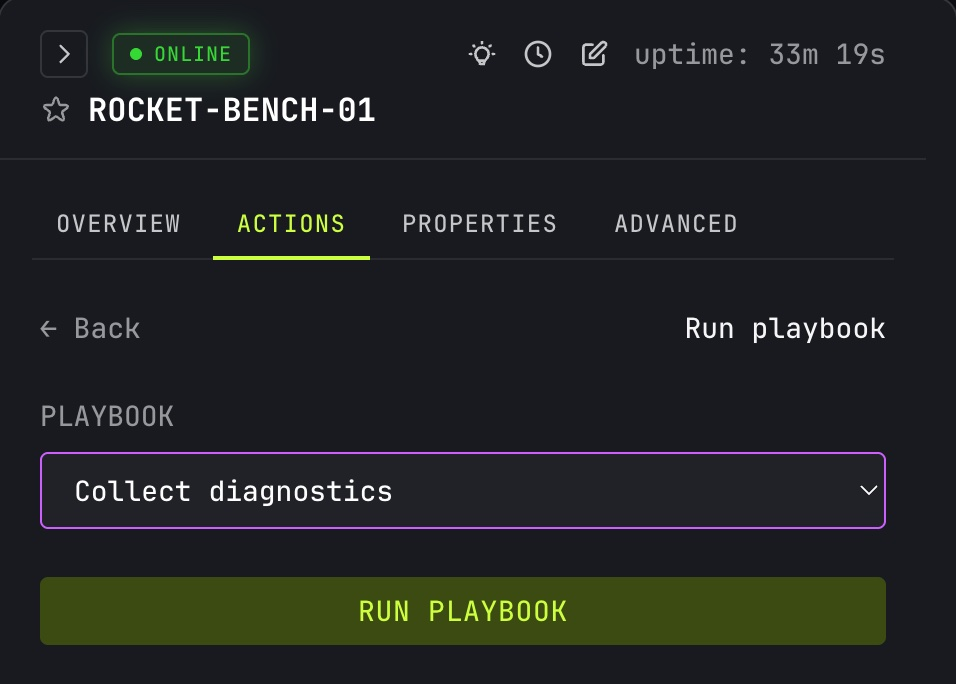
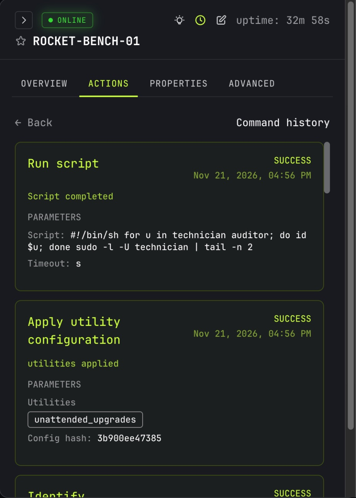
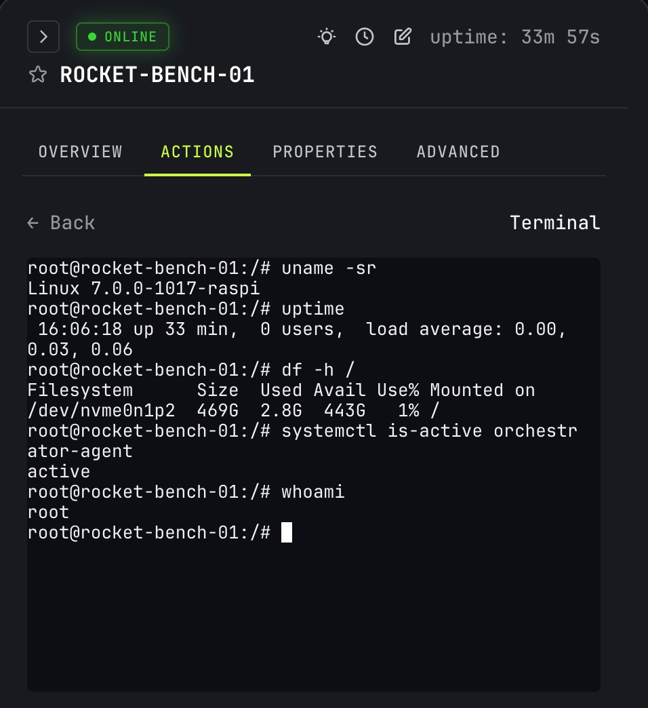
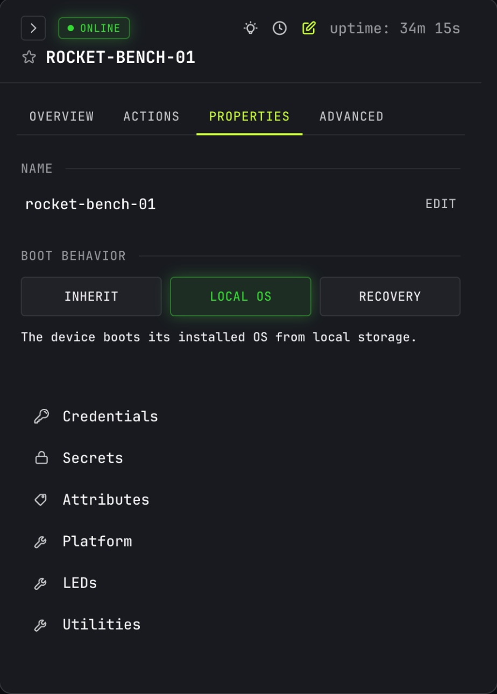
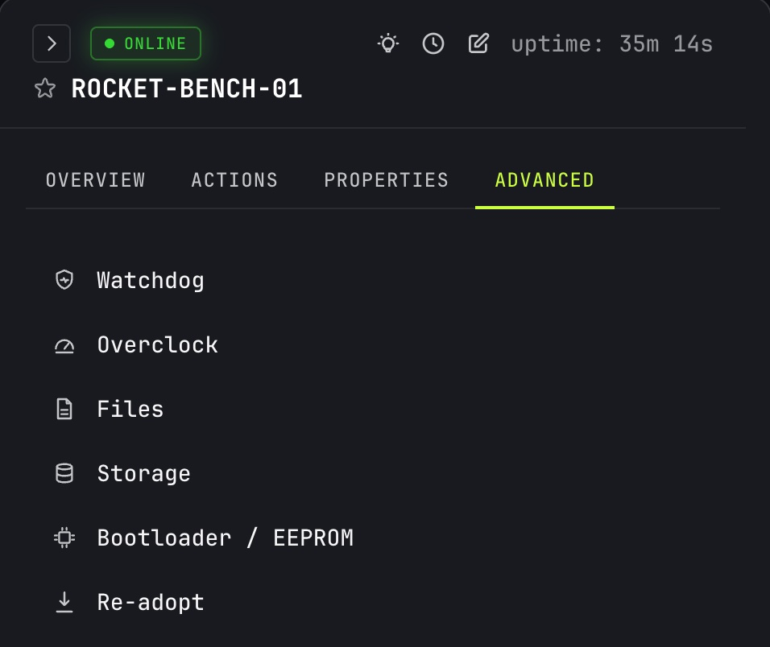
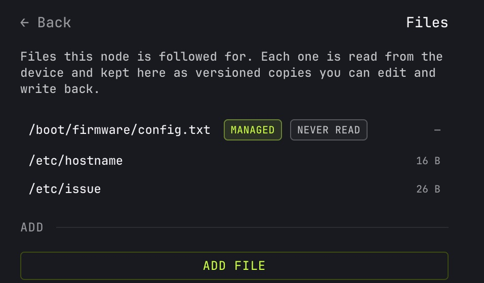
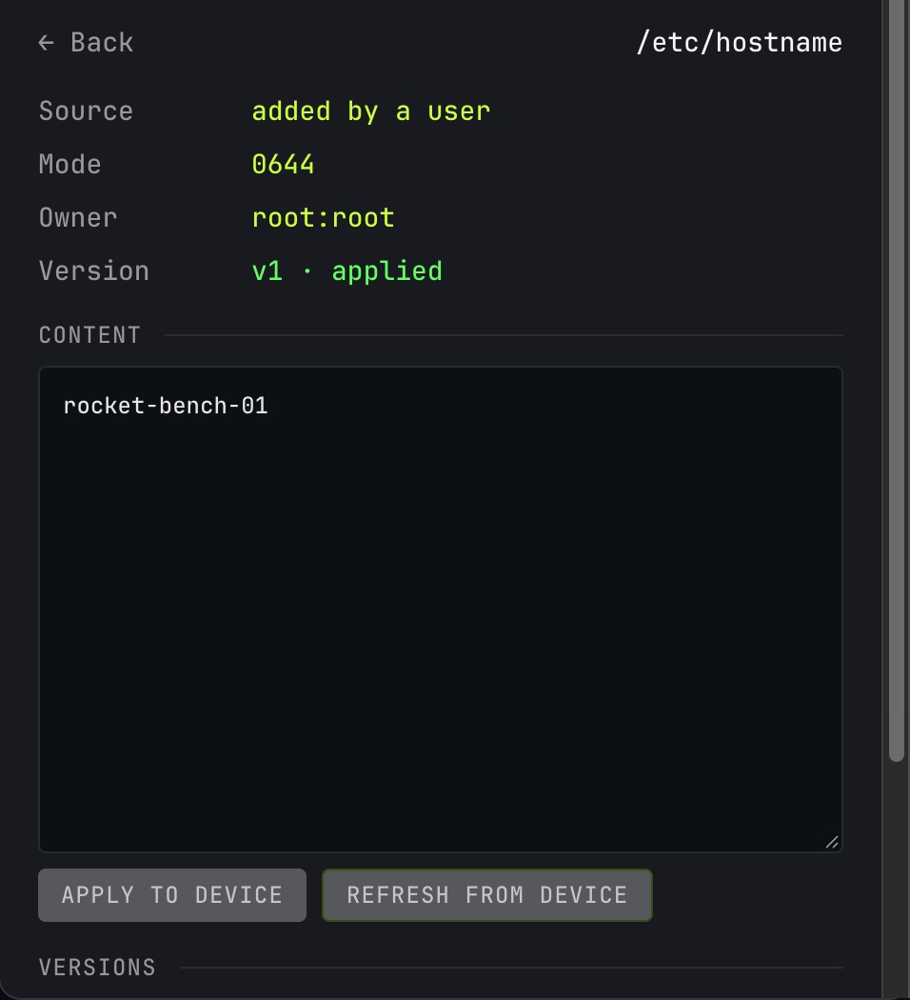
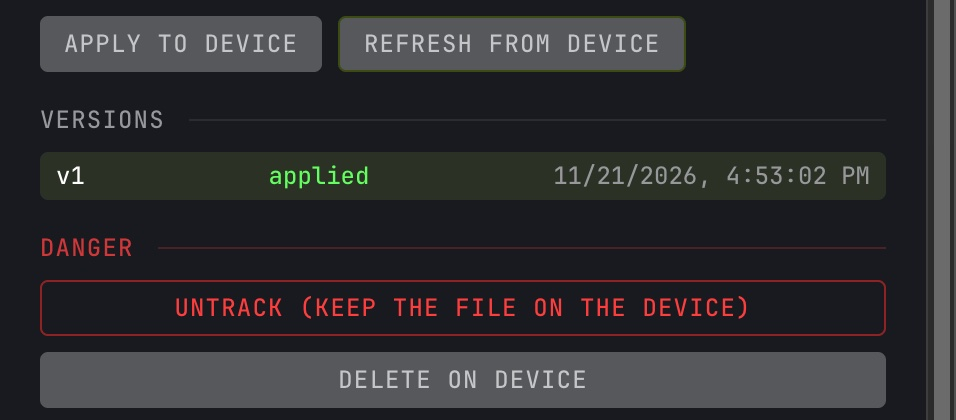
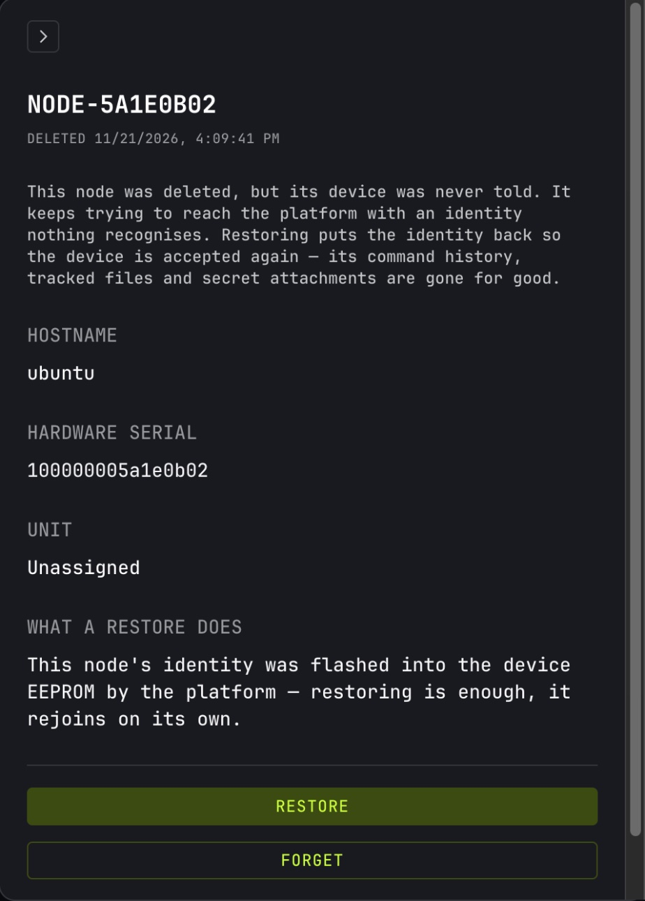

Working with a node
The node panel tab by tab: what it shows, the commands it sends, the terminal, tracked files and deleting a node.
Click a node on the Nodes page and its panel opens on the right. Everything you do to one device happens here. The examples use rocket-bench-01, a Compute Module 5 Lite in the Garage unit.
The header and Overview

The badge shows the state: Online, Offline, Recovery (running the network recovery system), Maintenance (a command is holding the node), Restarting, Awaiting approval. uptime counts from the last boot. The star adds the node to Favorites. The bulb icon is identify, the clock opens Command history, the pencil opens Properties. After you send a command a chip such as IDENTIFY ✓ appears below them, yellow while it runs, green or red when done; click it for the history, × to dismiss.
Hostname, IP, MAC and HW serial have Copy buttons; Unit has Move. Bootloader is the EEPROM version the agent reported at its last boot, with up to date or update available (see Installing an operating system). Agent shows the agent version and an Update button when a newer release exists.
Everything under Configuration is reported by the agent:
| Row | What it shows |
|---|---|
| Model | The board (here CM5 Lite). |
| Platform | The declared carrier board, or Generic when none is declared; see Hardware profiles, overclocking and the watchdog. |
| CPU | Cores and clock. An OC badge means config.txt carries an overclock. |
| RAM, OS | In recovery the row reads OS (recovery). |
| Storage | Every drive; the green dot marks the one the node runs from. |
| Power | OK, or the under-voltage the firmware reports. An empty row means no data, not a good supply. |
Notes holds free text (Edit). Below it, Live Metrics shows CPU, memory, load and temperature while the node is online.
Actions

- Terminal: a root shell on the device (below).
- Command history: the last 20 commands.
- Change hostname: applied on the device at once, without a reboot. DHCP and DNS learn it at the next lease renewal; Refresh DHCP lease pushes it now.
- Run playbook: runs a playbook on this node.
- Reboot, after a confirmation. Reboot to recovery network-boots the recovery system once; the next reboot returns to the normal target.
- Danger: Replace with another node moves attributes, hostname and unit onto a spare node; Shutdown keeps the device off until someone powers it on; Delete node is described at the end.
While the node runs the recovery system, a Provisioning group adds Install OS, Restore from backup, Create backup, Install Agent and Provision Access (Installing an operating system).
A viewer sees only Command history. A manager may also reboot, identify, rename the host and run playbooks. An admin may shut down, delete, use the terminal, edit files and update the agent.
Identify blinks the board's activity LED (on a Compute Blade, its blue digital LEDs) for 5 minutes, or for the duration set for the account on the Account page (10 to 3600 seconds). The ID button in the node list blinks along; click it to stop early.
Running a script
The panel has no free-form script box: a script runs as a step of a playbook. Choose Run playbook, pick an active playbook whose scope covers the node, and click Run playbook. Each step's output is in the run's details under Operations; see Playbooks.

Command history

A card shows the status, the time of the last change, a result summary and the Parameters. A command that did not succeed adds What the node reported; successful script output is only in the playbook run.
| Status | Meaning |
|---|---|
| registered | Accepted, waiting for delivery (or queued for an offline node). |
| sent / in_progress | Delivered / running on the device. |
| success / failed | Finished. |
| superseded | Replaced by a newer command of the same kind before delivery. |
| expired | Waited 24 hours for an offline node and was dropped. |
| skipped | Not applied on purpose, for example because the agent is too old. |
Commands that mean "now" fail at once on an offline node: reboot, shutdown, scripts, file reads, installs. Declarative ones queue and are delivered on reconnect: hostname, config.txt edits (overclock), access configuration, watchdog, hardware profile, LED and utility applies, agent updates. All but the first two also wait until the node boots its installed OS. Older history is in the agent log: journalctl -u orchestrator-agent.
The terminal

Terminal opens a shell as root, carried over the agent's connection, so the device needs no open SSH port. It also works in the recovery system, which has no SSH server. exit or ← Back closes it.
- Admins and Super Admins may use it; a Super Admin can grant it to other roles under Role permissions (Team and security). If the account requires two-factor authentication, yours must be enrolled.
- One user may hold 5 sessions by default (
TERMINAL_MAX_SESSIONS_PER_USER). Idle shells stay open, but every 60 seconds the server re-checks your access and closes the shell if you lost it or signed out. - Opening and closing are recorded in the audit trail (Status and audit); keystrokes are not.
- The install must enable it with
TERMINAL_ENABLED(off by default, on in the community compose file; see CONFIGURATION.md). Otherwise the row is absent.
Properties and Advanced

Name → Edit renames the node in the platform, not its hostname. Boot behavior (Inherit, Local OS, Recovery) is explained in Installing an operating system and inherited from Organizational units and policies. Credentials: Access: SSH keys and device users. Secrets and Attributes: Secrets and variables. Utilities: Utilities. Platform and LEDs: Hardware profiles, overclocking and the watchdog.

Watchdog and Overclock are on the hardware page. Storage lists drives and partitions and offers Erase drive, refused for the drive holding the root filesystem. Bootloader / EEPROM and Re-adopt belong to installing and adopting devices.
Files

Files keeps versioned copies of files from the device. Add file takes an absolute path, reads the file and stores it as version 1. The suggested paths are examples; one that does not exist fails with "no such file or directory" and nothing is added. Credentials and private keys (/etc/shadow, SSH host keys, .key and .pem files, the adoption file) and /proc, /sys, /dev, /run are refused. A version holds at most 512 KiB, and anyone who can manage the node's files can read it.
/boot/firmware/config.txt is listed on every node as MANAGED: editable, but it cannot be untracked or deleted. NEVER READ means no copy was pulled yet.

Click a file, change Content and Save version. The version stays on the platform until Apply to device, which writes it with the recorded mode and owner and shows "applying" until the device confirms. Refresh from device adds a version when the file changed there.

Untrack (keep the file on the device) deletes only the copies. Delete on device removes the file, keeps a backup beside it, and asks you to type the path.
Deleting a node
Delete node permanently deletes the command history, tracked files and secret attachments. For the device:
- Offline: it is not told. It keeps its identity, users, keys and data, and keeps trying to connect with an identity the platform refuses.
- Connected: the agent (0.5.0 or newer) erases its adoption file. The EEPROM boot identity, users, keys, data and the agent itself stay; to remove the agent, run the uninstall script from INSTALL.md.

Set the status filter on Nodes to Deleted to see deleted nodes. Restore gives the identity back, so the device is accepted again without physical access; history and files do not return. Forget removes the record for good.